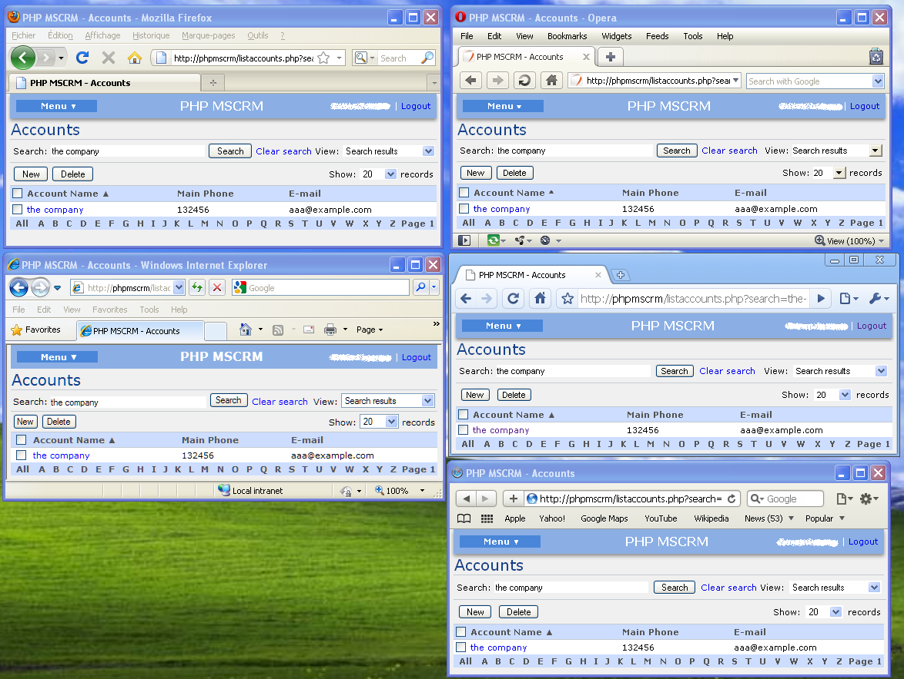
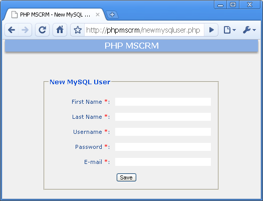
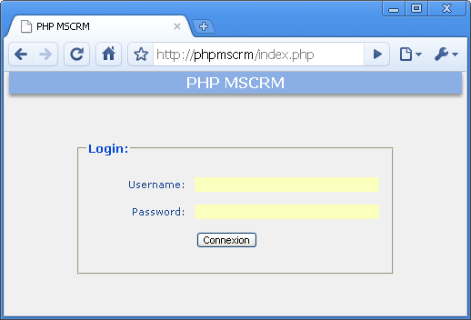
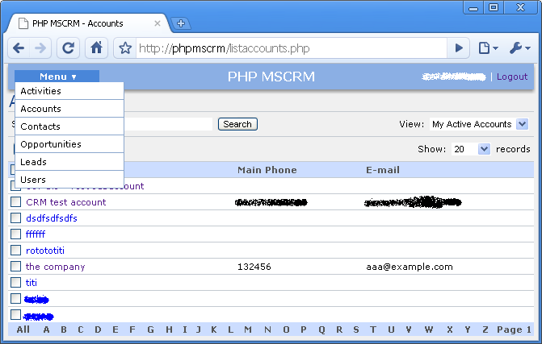
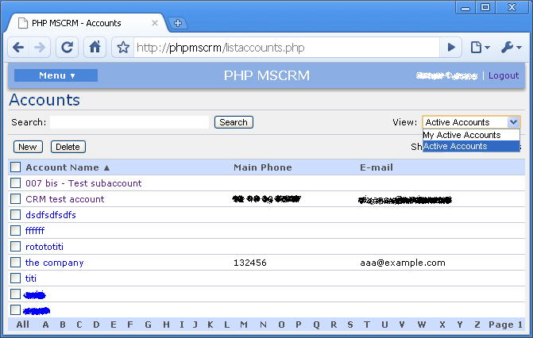
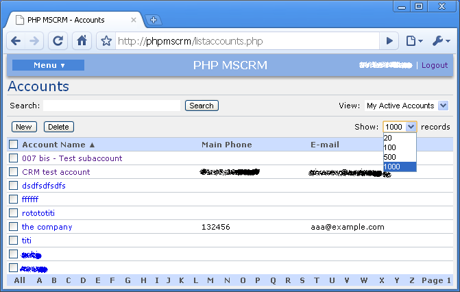
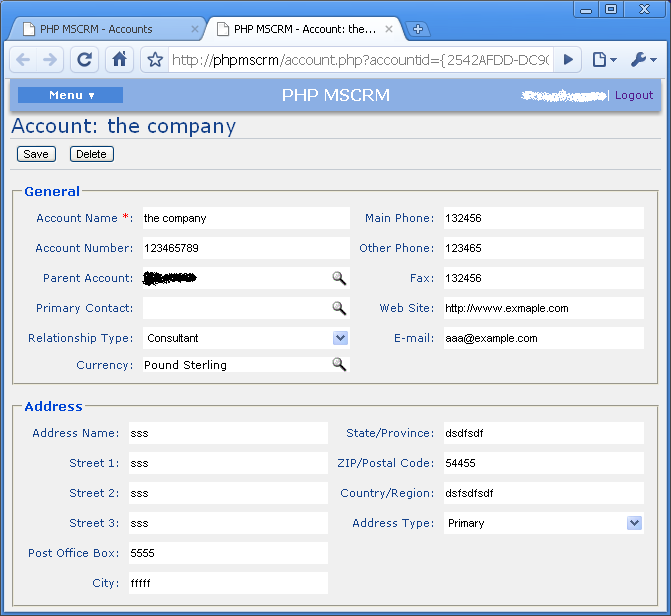
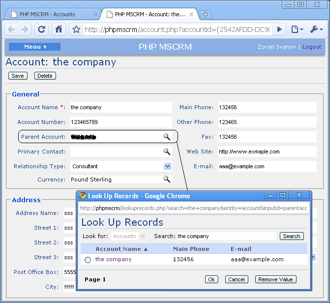

PHPMSCRM - Documentation
Project Description
Project providing a PHP tools which can be used to build a PHP interface for Microsoft Dynamics CRM 4.0.
This project is built around the NuSOAP - SOAP Toolkit for PHP using the Web Services provided by the Microsoft Dynamics CRM. It uses the adLDAP - LDAP Authentication with PHP for Active Directory if AD authentication is selected.
This project’s goal is not to rebuild the Microsoft Dynamics CRM in PHP only to give a HOW-TO for a good integration interface.
The PHPMSCRM interface provides the following advantages:
-
Cross Browser Compatibility. PHPMSCRM is tested with:
- Google Chrome
- Mozilla Firefox
- Opera
- Safari
- Internet Explorer

- W3C Standards respectful.
- Personalization features. There is no limit to how you can personalize Views and Forms.
-
PHP/MySQL authentication features. Access to PHPMSCRM can be managed through a PHP/MySQL authentication to allow multiple access to the CRM.
- It can be even hardcoded to allow public access. This can be useful in case you want to put a form on the internet where visitors will provide their information and an information request and this will automatically create a new Lead in the CRM.
- Integration Features. The PHPMSCRM Platform can be used to exchange data with other systems.
- Etc…
Requirements
The following requirements should be met prior to using PHPMSCRM:
- PHP version 5.2.0 or higher
- PHP extension php_curl enabled (For the NUSOAP library to be able to fetch the CRM Web Service)
- PHP extension php_ldap enabled (If Active Directory authentication is used)
Installation instructions
- Copy the contents of zip archive to any location in your application required.
- Create the MySQL database using the setup_db.sql script.
- Update the config.inc.php file for your case.
-
Create a mysql user with the newmysqluser.php script (http://phpmscrm/newmysqluser.php):

Getting started
A good way to get started is to go through the already created Views and Forms.
Create / modify / delete entries to see how it works.
Login to PHPMSCRM.
Before login to PHPMSCRM be sure to have created the MySQL user if you're not using the AD Authentication.
Or if you're using the AD authentication be sure to have the Domain configuration right in the config.inc.php file.

Entites
The following entites are implemented in the PHPMSCRM for now:
- Activities
- Accounts
- Contacts
- Opportunities
- Leads
- Users
You can reach them through the Menu:

For each entity there is a View with the following options when possible.
- Columns sort
- Letter Filter
- Number of Records to display parameter
- Owner filter
- Search Feature
- New entry link
- Delete delete entries button to delete the selected entries


For each entity there is a Form with the following options when possible :
- Create new Entry
- Consult existent Entry
- Update existent Entry
- Delete existent Entry

The Look Up Records Field is already implemented:
